estado lido da ASC em 2026-11-11 16:36 · abrir ASC
Testes A/B
Em desenvolvimento (0)
Esperando seu OK (2)
A — Contador · hora de ir pra maternidade · semanas e DPP · bolsa estourou · histórico pro médico
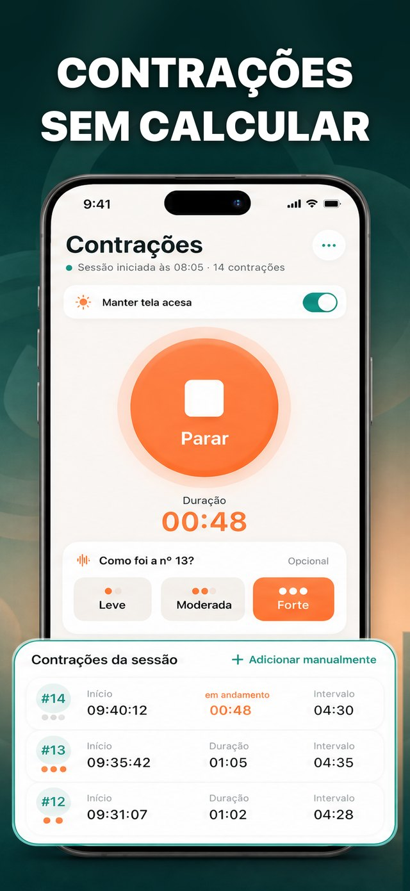
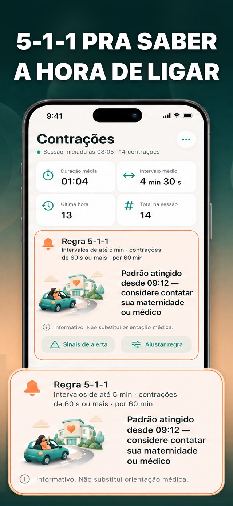
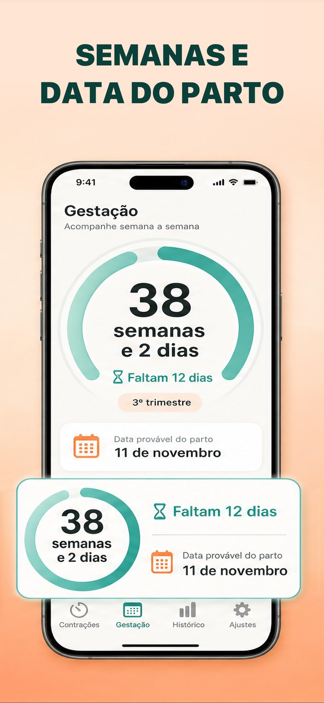
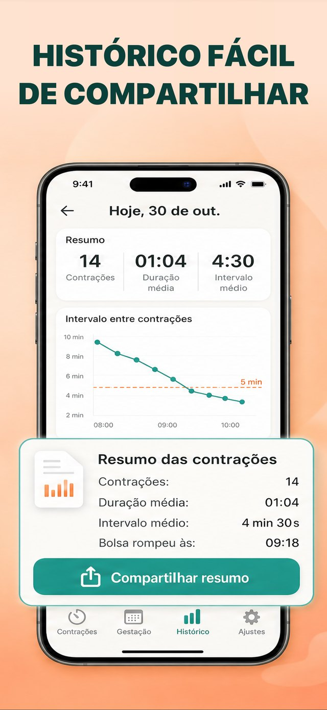
A · ja — amostra traduzida
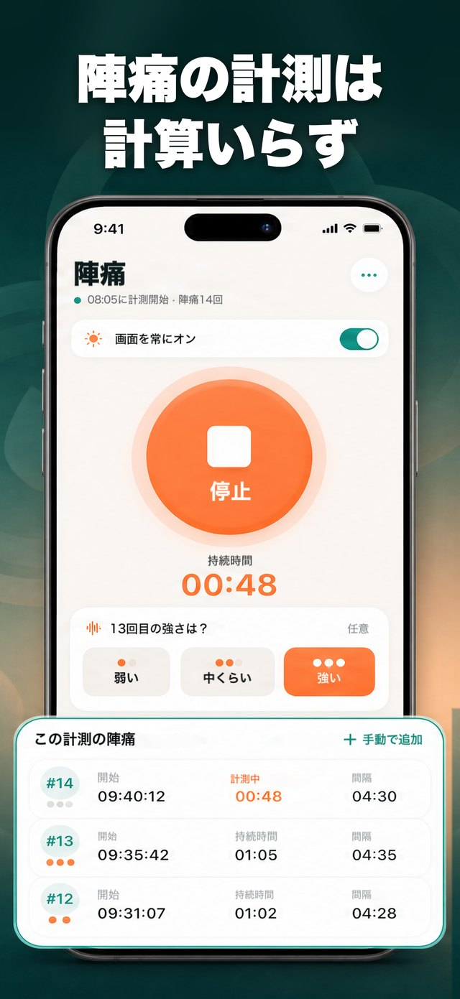
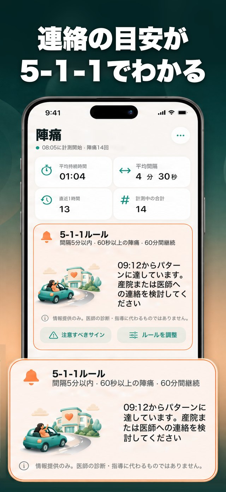
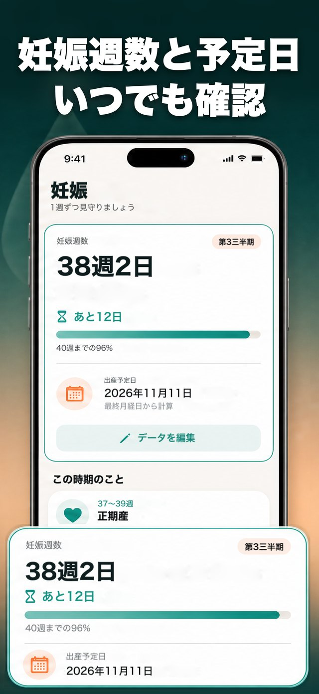
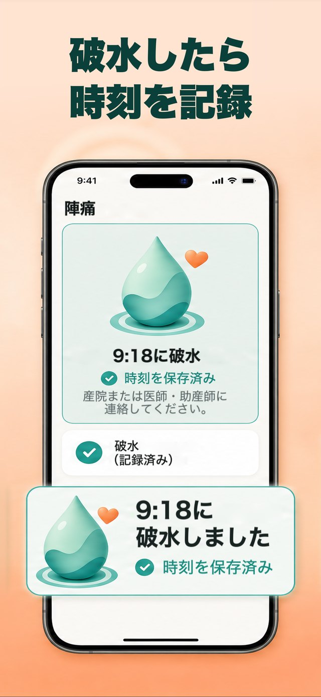
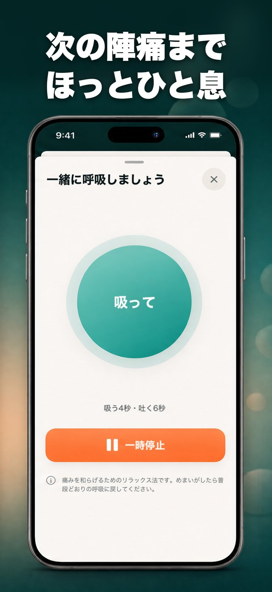
A · en-US — amostra traduzida
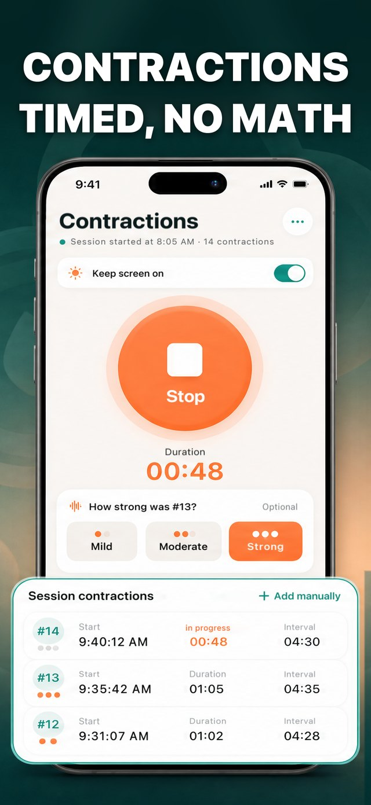
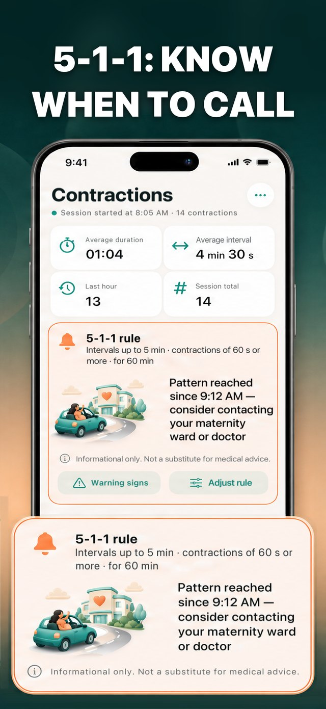
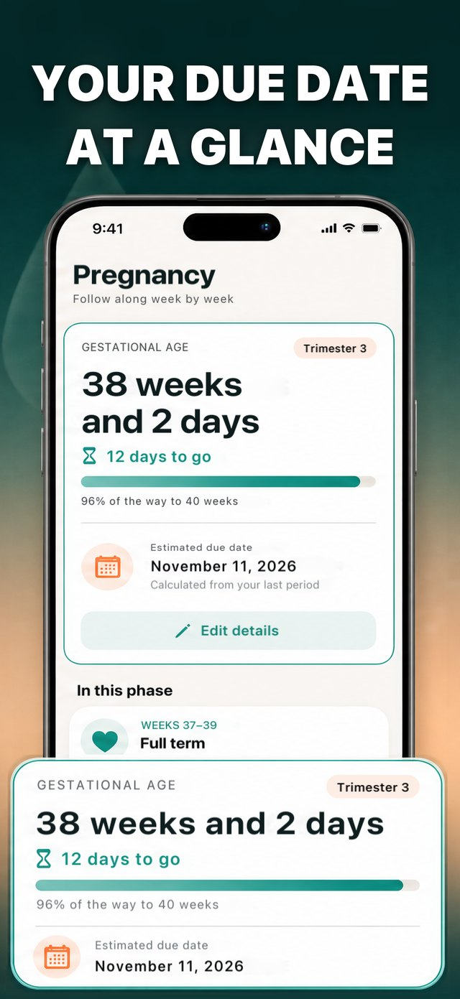
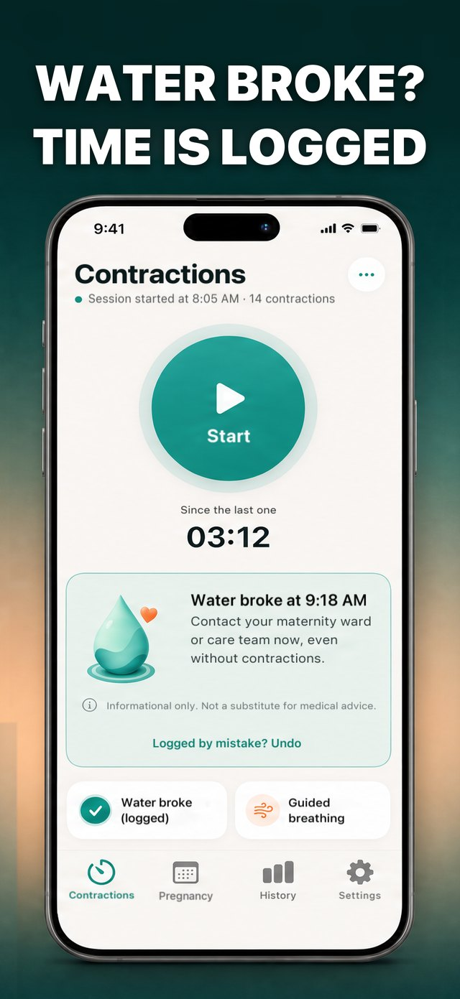
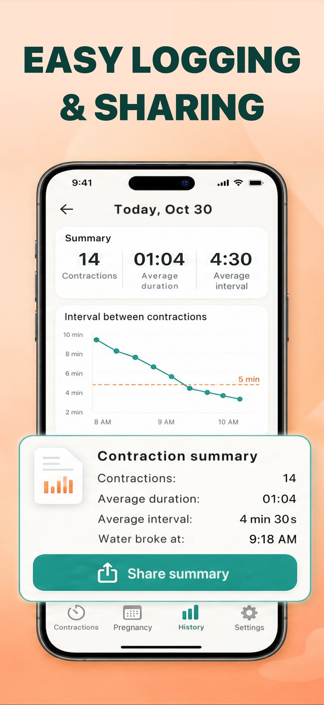
A — O almanaque da Lua — a lua do seu céu + cabelo, plantio e pesca + calendário
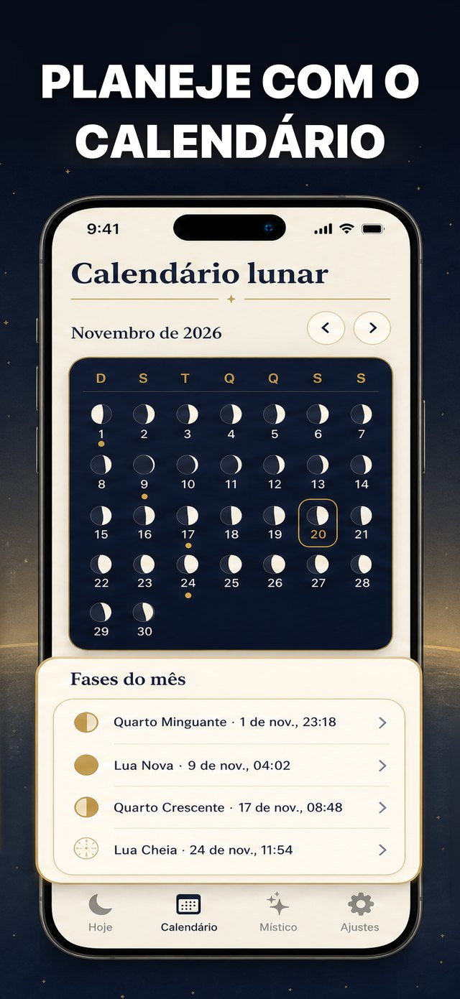
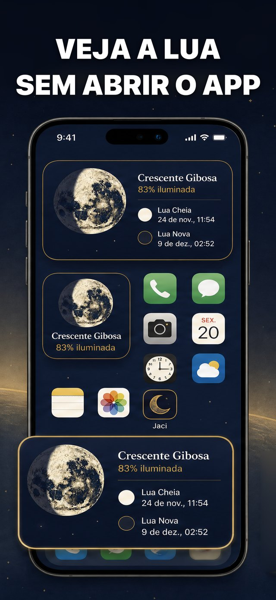
Telas reais (base) — capturas do simulador, pt-BR, 30/10
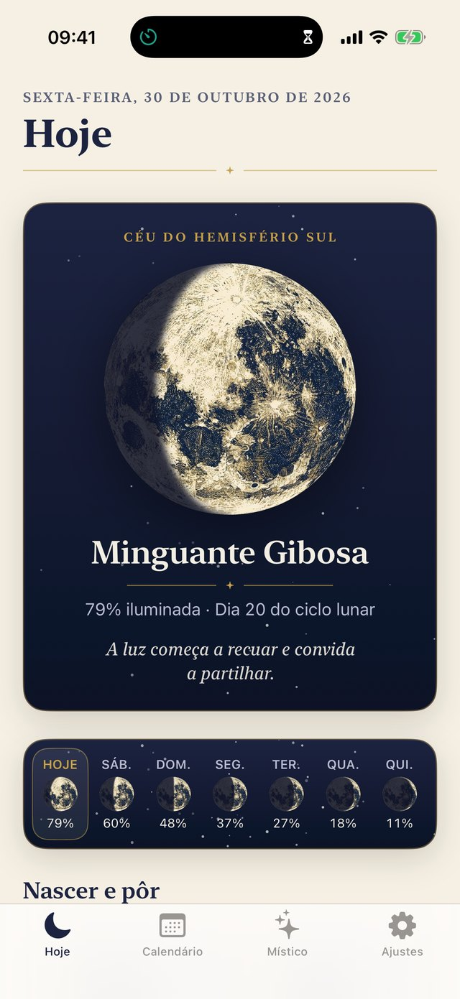
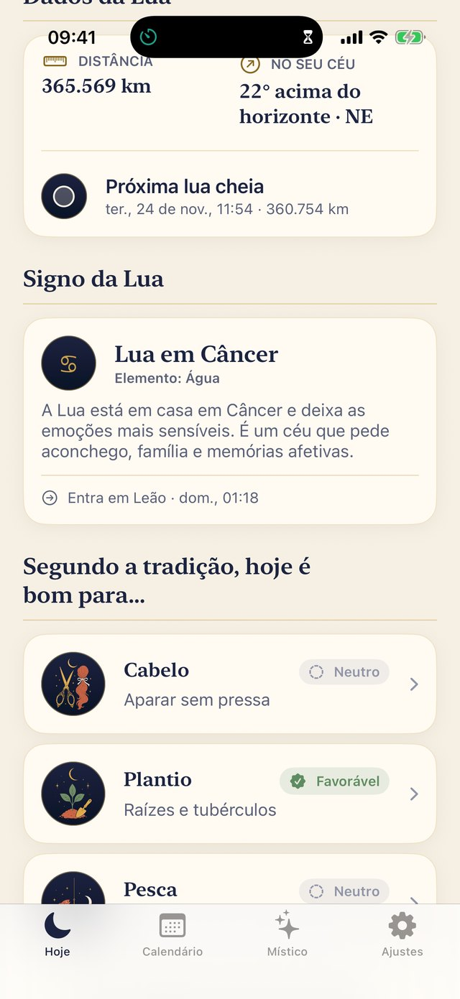
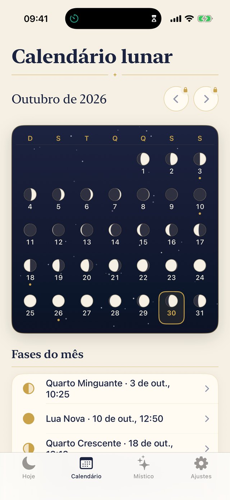
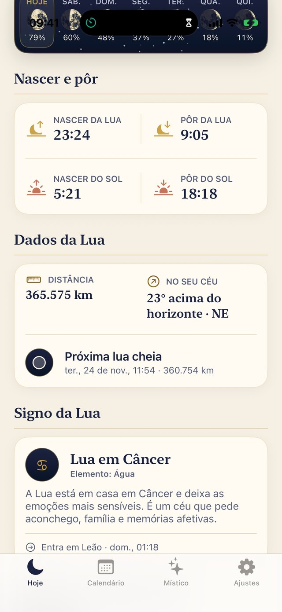
Aguardando a Apple / Start (0)
Rodando agora (16)
Nenhum no ar
163 downloads na janela · 5/dia · ▼ -13% tendência · CVR página 1.4% · US$ 53/mês · veredito WATCH
tráfego 50%Linha de baseImpressões únicas604Conversão6,17%4,67 a 7,94%Melhora—Confiança—
Coletando dadosImpressões únicas183Conversão5,34%3,06 a 8,48%Melhora−13,50%−54,21 a +43,86%Confiança0%
Coletando dadosImpressões únicas211Conversão6,48%3,94 a 9,84%Melhora+4,92%−38,93 a +69,03%Confiança0%
Coletando dadosImpressões únicas203Conversão7,82%4,82 a 11,75%Melhora+26,68%−26,84 a +99,13%Confiança0,8%
Outra linha de base (menu da ASC)
vs azul minimalista: Original +15,61% (conf 0%) · claro colorido +21,30% (conf 0%) · escuro cidade +46,46% (conf 0,6%)
vs claro colorido: Original −4,69% (conf 0%) · azul minimalista −17,56% (conf 0%) · escuro cidade +20,74% (conf 0,1%)
vs escuro cidade: Original −21,06% (conf 0,8%) · azul minimalista −31,72% (conf 0,6%) · claro colorido −17,18% (conf 0,1%)
escuro cidade


claro colorido


azul minimalista


546 downloads na janela · 18/dia · ▼ -6% tendência · CVR página 30.4% · US$ 71/mês · veredito WATCH
tráfego 75%Linha de baseImpressões únicas705Conversão8,94%7,28 a 10,80%Melhora—Confiança—
Coletando dadosImpressões únicas772Conversão9,54%7,86 a 11,41%Melhora+6,69%−17,56 a +40,62%Confiança0,4%
Coletando dadosImpressões únicas754Conversão8,93%7,32 a 10,72%Melhora−0,15%−23,64 a +30,86%Confiança0,1%
Coletando dadosImpressões únicas773Conversão9,66%7,96 a 11,55%Melhora+8,06%−17,76 a +40,93%Confiança0,6%
Outra linha de base (menu da ASC)
vs A: Original −6,27% (conf 0,4%) · B −6,41% (conf 0,3%) · C +1,29% (conf 0,1%)
vs B: Original +0,15% (conf 0,1%) · A +6,85% (conf 0,3%) · C +8,22% (conf 0,6%)
vs C: Original −7,46% (conf 0,6%) · A −1,27% (conf 0,1%) · B −7,60% (conf 0,6%)
Treatment A (Estilo de vida claro)


Treatment B (Ilustracao escura)


Treatment C (Cartoes gigantes)


82 downloads na janela · 3/dia · ▼ -26% tendência · CVR página 0.0% · US$ 0/mês · veredito KILL
tráfego 75%Linha de baseImpressões únicas474Conversão1,79%0,90 a 3,13%Melhora—Confiança—
Coletando dadosImpressões únicas488Conversão2,17%1,14 a 3,67%Melhora+21,09%−46,77 a +192,73%Confiança0%
Coletando dadosImpressões únicas494Conversão1,09%0,49 a 2,07%Melhora−38,93%−76,74 a +56,55%Confiança0%
Coletando dadosImpressões únicas444Conversão1,85%0,90 a 3,28%Melhora+3,13%−55,76 a +163,46%Confiança0%
Outra linha de base (menu da ASC)
vs A: Original −17,41% (conf 0%) · B −49,57% (conf 0,2%) · F −14,83% (conf 0%)
vs B: Original +63,75% (conf 0%) · A +98,28% (conf 0,2%) · F +68,87% (conf 0,1%)
vs F: Original −3,03% (conf 0%) · A +17,42% (conf 0%) · B −40,78% (conf 0,1%)
Treatment A (Neon Purple)


Treatment B (Aurora)


Treatment F (Minimal)


157 downloads na janela · 5/dia · ▼ -24% tendência · CVR página 0.9% · US$ 67/mês · veredito WATCH
tráfego 75%Linha de baseImpressões únicas282Conversão5,95%3,79 a 8,75%Melhora—Confiança—
Coletando dadosImpressões únicas312Conversão6,29%4,13 a 9,04%Melhora+5,78%−39,96 a +81,02%Confiança0%
Coletando dadosImpressões únicas271Conversão4,98%3,10 a 7,46%Melhora−16,30%−55,10 a +48,81%Confiança0,1%
Coletando dadosImpressões únicas311Conversão5,35%3,47 a 7,77%Melhora−10,09%−50,13 a +54,19%Confiança0,1%
Outra linha de base (menu da ASC)
vs A: Original −5,46% (conf 0%) · B −20,87% (conf 0,3%) · C −15,00% (conf 0,2%)
vs B: Original +19,47% (conf 0,1%) · A +26,37% (conf 0,3%) · C +7,41% (conf 0%)
vs C: Original +11,23% (conf 0,1%) · A +17,65% (conf 0,2%) · B −6,90% (conf 0%)
Treatment A (Light clean)


Treatment B (Dark sloth)


Treatment C (Sloth story)


143 downloads na janela · 5/dia · ▼ -21% tendência · CVR página 12.4% · US$ 0/mês · veredito WATCH
tráfego 75%Linha de baseImpressões únicas364Conversão5,27%3,55 a 7,44%Melhora—Confiança—
Coletando dadosImpressões únicas356Conversão6,01%4,06 a 8,47%Melhora+14,21%−31,96 a +85,70%Confiança0,1%
Coletando dadosImpressões únicas364Conversão5,00%3,36 a 7,07%Melhora−5,04%−44,35 a +56,19%Confiança0,1%
Coletando dadosImpressões únicas375Conversão6,39%4,38 a 8,88%Melhora+21,27%−27,81 a +94,75%Confiança0,3%
Outra linha de base (menu da ASC)
vs A: Original −12,44% (conf 0,1%) · B −16,85% (conf 0,4%) · C +6,19% (conf 0,1%)
vs B: Original +5,31% (conf 0,1%) · A +20,27% (conf 0,4%) · C +27,71% (conf 1,2%)
vs C: Original −17,54% (conf 0,3%) · A −5,83% (conf 0,1%) · B −21,70% (conf 1,2%)
Treatment A (Sueca no bolso)


Treatment B (Perguntas que fazem rir)


Treatment C (Desafios 10 segundos)


171 downloads na janela · 6/dia · ▲ +6% tendência · CVR página 1.5% · US$ 0/mês · veredito WATCH
tráfego 75%Linha de baseImpressões únicas389Conversão2,16%1,11 a 3,70%Melhora—Confiança—
Coletando dadosImpressões únicas395Conversão5,03%3,26 a 7,32%Melhora+133,19%+21,79 a +418,59%Confiança14,4%
Coletando dadosImpressões únicas355Conversão3,28%1,88 a 5,22%Melhora+52,03%−27,64 a +248,66%Confiança0,3%
Coletando dadosImpressões únicas351Conversão2,11%1,03 a 3,75%Melhora−2,00%−59,12 a +132,17%Confiança0%
Outra linha de base (menu da ASC)
vs A: Original −57,12% (conf 14,4%) · B −34,81% (conf 0,5%) · C −57,98% (conf 12,6%)
vs B: Original −34,22% (conf 0,3%) · A +53,39% (conf 0,5%) · C −35,54% (conf 0,2%)
vs C: Original +2,04% (conf 0%) · A +137,96% (conf 12,6%) · B +55,13% (conf 0,2%)
Treatment A (Bolso e alarme)


Treatment B (Tranquilidade)


Treatment C (Controle)


4.510 downloads na janela · 150/dia · → +4% tendência · CVR página 25.8% · US$ 1.053/mês · veredito SCALE
tráfego 66%Linha de baseImpressões únicas8.494Conversão5,89%5,47 a 6,32%Melhora—Confiança—
Coletando dadosImpressões únicas8.081Conversão5,77%5,36 a 6,21%Melhora−1,95%−11,88 a +8,25%Confiança0,5%
Coletando dadosImpressões únicas8.136Conversão5,91%5,48 a 6,35%Melhora+0,33%−9,40 a +11,03%Confiança0,2%
Outra linha de base (menu da ASC)
vs A: Original +1,99% (conf 0,5%) · B +2,33% (conf 0,4%)
vs B: Original −0,33% (conf 0,2%) · A −2,27% (conf 0,4%)
Treatment A (Telas traduzidas)


Treatment B (Light mode)


306 downloads na janela · 10/dia · ▼ -5% tendência · CVR página 10.9% · US$ 68/mês · veredito SCALE
tráfego 75%Linha de baseImpressões únicas236Conversão9,10%6,29 a 12,57%Melhora—Confiança—
Coletando dadosImpressões únicas248Conversão9,10%6,35 a 12,46%Melhora−0,08%−38,57 a +60,62%Confiança0%
Coletando dadosImpressões únicas231Conversão9,63%6,64 a 13,29%Melhora+5,74%−33,62 a +74,04%Confiança0,1%
Coletando dadosImpressões únicas239Conversão9,88%6,88 a 13,55%Melhora+8,54%−32,43 a +75,28%Confiança0,1%
Outra linha de base (menu da ASC)
vs A: Original +0,08% (conf 0%) · B +5,83% (conf 0%) · C +8,63% (conf 0,1%)
vs B: Original −5,43% (conf 0,1%) · A −5,51% (conf 0%) · C +2,65% (conf 0%)
vs C: Original −7,87% (conf 0,1%) · A −7,95% (conf 0,1%) · B −2,58% (conf 0%)
Treatment A (Guia de cortes)


Treatment B (Diário e reações)


Treatment C (Variedade por fase)


57 downloads na janela · 2/dia · ▼ -42% tendência · CVR página 0.0% · US$ 0/mês · veredito KILL
tráfego 75%Linha de baseImpressões únicas67Conversão4,71%1,18 a 11,91%Melhora—Confiança—
Coletando dadosImpressões únicas65Conversão3,26%0,59 a 9,60%Melhora−30,72%−88,77 a +331,52%Confiança0%
Coletando dadosImpressões únicas66Conversão4,74%1,17 a 12,05%Melhora+0,68%−80,26 a +441,36%Confiança0%
Coletando dadosImpressões únicas49Conversão3,43%0,41 a 11,94%Melhora−27,14%−92,76 a +384,76%Confiança0%
Outra linha de base (menu da ASC)
vs A: Original +44,35% (conf 0%) · B +45,33% (conf 0%) · C +5,16% (conf 0%)
vs B: Original −0,68% (conf 0%) · A −31,19% (conf 0%) · C −27,64% (conf 0%)
vs C: Original +37,26% (conf 0%) · A −4,91% (conf 0%) · B +38,19% (conf 0%)
Treatment A (Frase do dia)


Treatment B (Frase certa)


Treatment C (Arte atual traduzida)


120 downloads na janela · 4/dia · ▼ -10% tendência · CVR página 21.1% · US$ 0/mês · veredito WATCH
tráfego 75%Linha de baseImpressões únicas197Conversão2,94%1,31 a 5,52%Melhora—Confiança—
Coletando dadosImpressões únicas176Conversão3,33%1,42 a 6,43%Melhora+13,40%−61,14 a +198,55%Confiança0%
Coletando dadosImpressões únicas216Conversão3,53%1,70 a 6,29%Melhora+19,90%−56,23 a +203,31%Confiança0%
Coletando dadosImpressões únicas195Conversão4,20%2,01 a 7,53%Melhora+42,91%−45,88 a +262,25%Confiança0%
Outra linha de base (menu da ASC)
vs A: Original −11,81% (conf 0%) · B +5,73% (conf 0%) · C +26,02% (conf 0%)
vs B: Original −16,60% (conf 0%) · A −5,42% (conf 0%) · C +19,19% (conf 0%)
vs C: Original −30,02% (conf 0%) · A −20,65% (conf 0%) · B −16,10% (conf 0%)
Treatment A (Placar)


Treatment B (Regras)


Treatment C (Mesa)


172 downloads na janela · 6/dia · ▲ +7% tendência · CVR página 10.8% · US$ 83/mês · veredito WATCH
tráfego 75%Linha de baseImpressões únicas258Conversão6,45%4,05 a 9,58%Melhora—Confiança—
Coletando dadosImpressões únicas197Conversão5,28%2,97 a 8,47%Melhora−18,20%−58,65 a +56,76%Confiança0%
Coletando dadosImpressões únicas210Conversão5,37%3,10 a 8,47%Melhora−16,79%−56,17 a +61,72%Confiança0%
Coletando dadosImpressões únicas198Conversão5,51%3,13 a 8,81%Melhora−14,53%−57,20 a +60,92%Confiança0%
Outra linha de base (menu da ASC)
vs A: Original +22,25% (conf 0%) · B +1,73% (conf 0%) · C +4,48% (conf 0%)
vs B: Original +20,17% (conf 0%) · A −1,70% (conf 0%) · C +2,71% (conf 0%)
vs C: Original +17,01% (conf 0%) · A −4,29% (conf 0%) · B −2,64% (conf 0%)
Treatment A (Arte atual mais nova)


Treatment B (Panorama B)


Treatment C (Panorama C fundo preto)


3.199 downloads na janela · 107/dia · ▲ +6% tendência · CVR página 51.9% · US$ 952/mês · veredito SCALE
tráfego 75%Linha de baseImpressões únicas2.332Conversão11,50%10,44 a 12,61%Melhora—Confiança—
Coletando dadosImpressões únicas2.393Conversão11,61%10,56 a 12,72%Melhora+0,95%−11,30 a +16,04%Confiança0,2%
Coletando dadosImpressões únicas2.378Conversão11,09%10,07 a 12,16%Melhora−3,56%−15,13 a +10,61%Confiança0,8%
Coletando dadosImpressões únicas2.442Conversão12,19%11,10 a 13,33%Melhora+5,99%−7,04 a +20,96%Confiança2%
Outra linha de base (menu da ASC)
vs A: Original −0,94% (conf 0,2%) · B −4,47% (conf 0,7%) · C +4,99% (conf 2,4%)
vs B: Original +3,69% (conf 0,8%) · A +4,68% (conf 0,7%) · C +9,91% (conf 10,8%)
vs C: Original −5,66% (conf 2%) · A −4,76% (conf 2,4%) · B −9,01% (conf 10,8%)
Treatment A (Arte atual elevada)


Treatment B (Icone 1)


Treatment C (Icone 1)


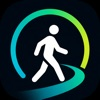
Walk: Steps & Calorie Tracker — Prints A-B-C 2026-10-27233 downloads na janela · 8/dia · ▼ -7% tendência · CVR página 20.4% · US$ 17/mês · veredito WATCH
tráfego 75%Linha de baseImpressões únicas193Conversão7,38%4,53 a 11,13%Melhora—Confiança—
Coletando dadosImpressões únicas194Conversão6,60%4,01 a 10,02%Melhora−10,60%−51,51 a +72,08%Confiança0%
Coletando dadosImpressões únicas215Conversão8,39%5,39 a 12,23%Melhora+13,67%−37,88 a +108,92%Confiança0%
Coletando dadosImpressões únicas198Conversão6,29%3,84 a 9,54%Melhora−14,75%−54,05 a +61,07%Confiança0%
Outra linha de base (menu da ASC)
vs A: Original +11,86% (conf 0%) · B +27,15% (conf 0,2%) · C −4,65% (conf 0%)
vs B: Original −12,03% (conf 0%) · A −21,35% (conf 0,2%) · C −25,01% (conf 0,3%)
vs C: Original +17,31% (conf 0%) · A +4,87% (conf 0%) · B +33,35% (conf 0,3%)
Treatment A (Widget e meta)


Treatment B (Celebre cada meta)


Treatment C (Panorama C)


49 downloads na janela · 2/dia · ▲ +12% tendência · CVR página 4.8% · US$ 0/mês · veredito KILL
tráfego 66%Linha de baseImpressões únicas44Conversão5,21%0,92 a 15,28%Melhora—Confiança—
Coletando dadosImpressões únicas31Conversão4,54%0,34 a 18,19%Melhora−12,83%−94,13 a +802,36%Confiança0%
Coletando dadosImpressões únicas42Conversão5,31%0,89 a 15,85%Melhora+1,89%−85,96 a +774,39%Confiança0%
Outra linha de base (menu da ASC)
vs A: Original +14,72% (conf 0%) · C +16,89% (conf 0%)
vs C: Original −1,86% (conf 0%) · A −14,45% (conf 0%)
Treatment A (Frase real com audio)


Treatment C (Claro carreira)


4 downloads na janela · 0/dia · → +0% tendência · US$ 0/mês · veredito KILL
tráfego 75%Linha de baseImpressões únicas5Conversão35,89%3,24 a 85,36%Melhora—Confiança—
Coletando dadosImpressões únicas12Conversão12,15%0,95 a 42,87%Melhora−66,15%−97,78 a +288,62%Confiança9,8%
Coletando dadosImpressões únicas14Conversão9,39%0,73 a 34,70%Melhora−73,84%−98,61 a +211,61%Confiança11,7%
Coletando dadosImpressões únicas9Conversão18,80%1,53 a 59,36%Melhora−47,61%−95,35 a +502,94%Confiança9,6%
Outra linha de base (menu da ASC)
vs A: Original +195,39% (conf 9,8%) · B −22,72% (conf 0%) · C +54,76% (conf 0,1%)
vs B: Original +282,23% (conf 11,7%) · A +29,40% (conf 0%) · C +100,26% (conf 0,2%)
vs C: Original +90,87% (conf 9,6%) · A −35,38% (conf 0,1%) · B −50,06% (conf 0,2%)
Treatment A (Cofre de documentos)


Treatment B (Scanner PDF)


Treatment C (Busca OCR claro)


18 downloads na janela · 1/dia · ▲ +57% tendência · US$ 0/mês · veredito KILL
tráfego 75%Linha de baseImpressões únicas69Conversão2,28%0,17 a 9,47%Melhora—Confiança—
Coletando dadosImpressões únicas61Conversão2,77%0,21 a 11,43%Melhora+21,71%−94,57 a +2260,12%Confiança0%
Coletando dadosImpressões únicas53Conversão3,12%0,23 a 12,80%Melhora+37,06%−92,39 a +2594,19%Confiança0%
Coletando dadosImpressões únicas63Conversão2,52%0,19 a 10,45%Melhora+10,82%−92,52 a +2222,40%Confiança0%
Outra linha de base (menu da ASC)
vs A: Original −17,84% (conf 0%) · B +12,61% (conf 0%) · C −8,95% (conf 0%)
vs B: Original −27,04% (conf 0%) · A −11,20% (conf 0%) · C −19,14% (conf 0%)
vs C: Original −9,76% (conf 0%) · A +9,83% (conf 0%) · B +23,67% (conf 0%)
Treatment A (Titulo da casa)


Treatment B (Sentimento editorial)


Treatment C (Versiculo na tela de bloqueio)